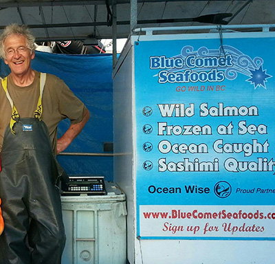

Locations
Blue Comet Seafoods can be found throughout the Vancouver area of BC:
the Steveston Fisherman’s Wharf selling our frozen-at-sea Salmon off the Blue Comet and The Vancouver Farmer’s Market.
Summer Farmer’s Markets:
• Trout Lake Farmer’s Market
Every Saturday, 9am - 2pm, from May 7 to Oct 22, 2016
• Kitsilano Farmer’s Market
Every Sunday, 10am – 2pm, from May 8 to Oct 23, 2016
• West End Farmer’s Market
Every Saturday, 9am – 2pm, from June 4 to Oct 22, 2016
• Mount Pleasant Farmer’s Market
Every Sunday, 10am-2pm, from June 12 to Oct 9, 2016
• Main Street Farmers’ Market
On Wednesdays, 2pm - 6pm, June 8th, 22nd; July 6th, 20th; August 3rd, 17th, 30th; September 14th, 28th
• Yaletown Farmers Market
Every Thursday, 2pm - 6pm, from May 5 - October 27, 2016 exept May 19, June 16, July 21, August 18, September 15, October 20
• Langley Community Farmers Market
Every Wednsday, 12.00pm - 4.30pm, from May 18th until October 12, 2016
Locations
Blue Comet Seafoods can be found throughout the Vancouver area of BC:
the Steveston Fisherman’s Wharf selling our frozen-at-sea Salmon off the Blue Comet and The Vancouver Farmer’s Market.
Locations
Blue Comet Seafoods can be found throughout the Vancouver area of BC:
the Steveston Fisherman’s Wharf selling our frozen-at-sea Salmon off the Blue Comet and The Vancouver Farmer’s Market.